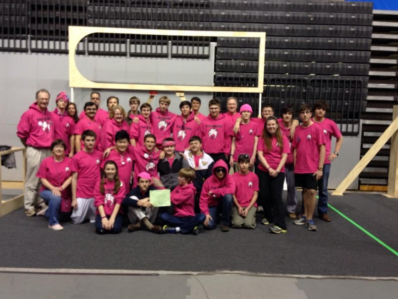

March 12, 2015
Highland Robotics Team Supports Finley’s Green Leap Forward

Highland Robotics Team Supports Green Leap Forward
As they gear up for this year’s competition, Recycle Rush, Team Robohawk proudly supports Finley’s Green Leap Forward, and environmental fund created in honor of Highland graduate, Finley Broaddus (’14).
“Team RoboHawk will put Finley’s Green Leap logo on their project this year. The robot competition is “recycle rush” – where teams compete to build a robot that can recycle.”
Pink Bracelets with ‘Finley’s Fund and Team Robohawk’
Every year Team Robohawlk does a school wide fund raiser. For this year’s fundraiser, the team is selling pink bracelets-one side with “Team RoboHawk” the other side “Finley’s Fund”. With the purchase of a bracelet comes a dress down day for the pep rally and a donation of 20% of the proceeds to Finley’s Green Leap Forward Fund. In this spirit, the team has also chosen to adopt a stream – more details to follow! For more information visit: http://highlandrobotics.org
This year Highland’s robotics team is also excited to support Finley’s Green Leap Forward Fund in conjunction with the teams fundraising efforts with the sale of Finley’s Fund /Team RoboHawlk bracelets.